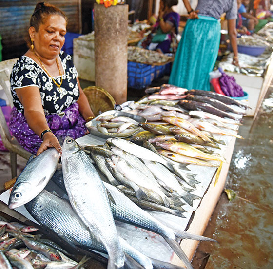
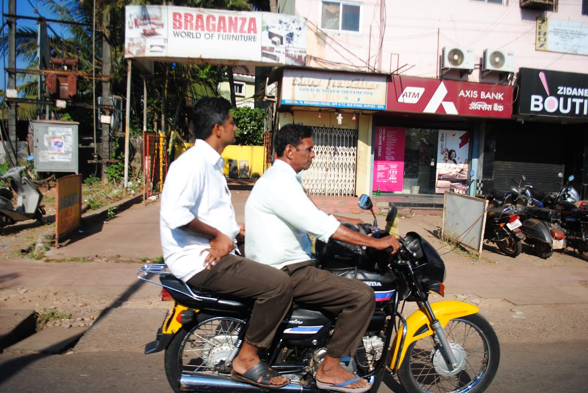
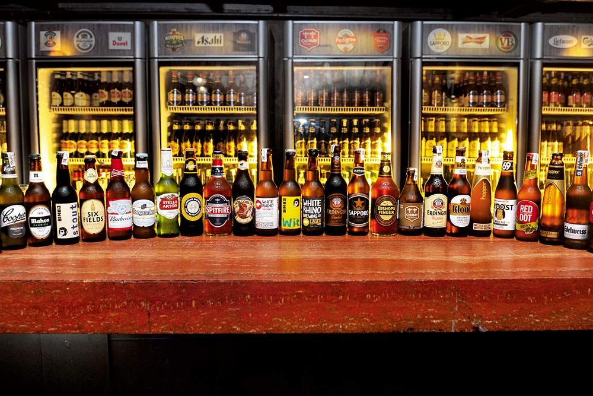
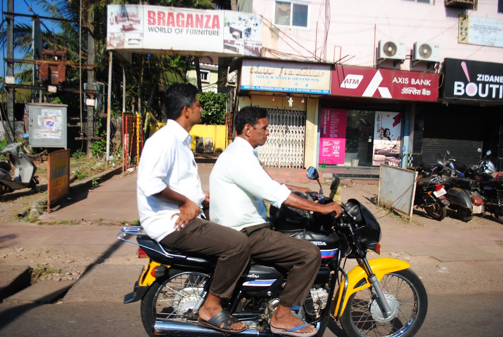
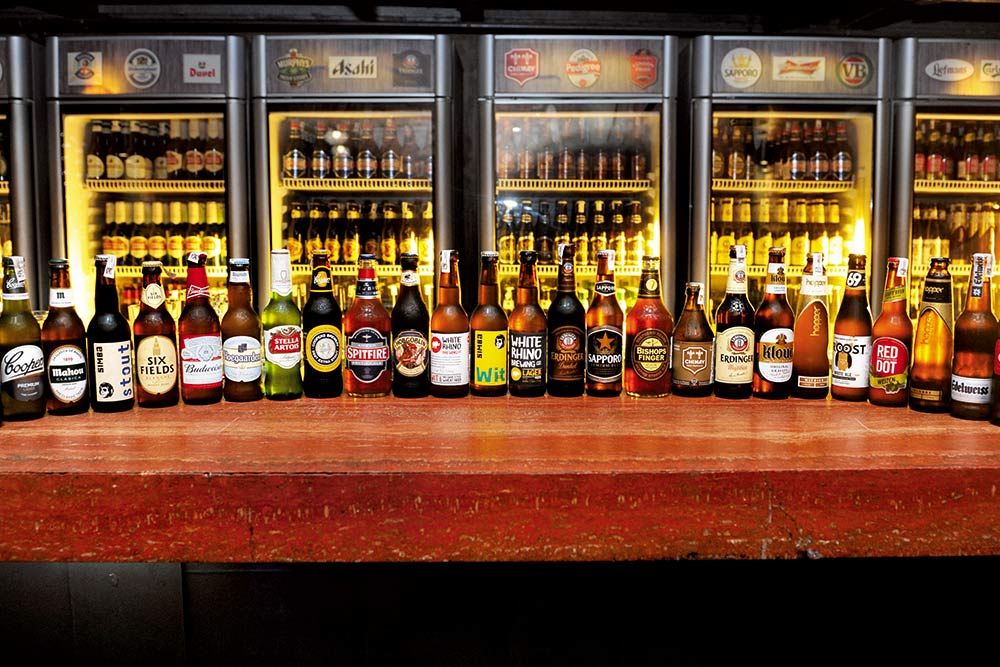

2. Transportation Service:As goa is a renowned travel destination for domestic and international tourists, the potential of the transportation business is huge. It includes car rental, luxury
bus service, and many more.
3. Vending Machine:Installing a Vending machine is one of the best business ideas in Goa. Find innovative ideas that suit the location and audience’s needs. A vending machine is an advanced
form of retail business.
4. Photography: photgraphy is seen to be the most common and popular buisness in Goa.
5. Travel Agency:Tourism is literally the “bread and butter” of the economy. Goa has been labeled the ‘hot spot’ by teenagers and young adults alike. Perhaps it is one of the few places
that have used its natural assets as an advantage. Travel agency with allied services is one of the most legit business ideas in Goa.
6. Brewpub:Goa is notable for its low beer, wine, and spirits prices due to its very low excise duty on alcohol. Brewpub business is actually a restaurant and microbrewery combination that normally offers craft beer with different customized tastes and flavors to their clients on-premise. Studies have shown that drinking beer in different customized tastes is a trend of today’s phenomena.
7. Fast food Restaurant:A fast food restaurant, also known as a quick service restaurant (QSR) within the industry, is a specific type of restaurant that serves fast food cuisine
and has minimal table service. ... Variations on the fast food restaurant concept include fast casual restaurants and catering trucks.
8. Fish farming:Goa earns massive revenue from fish farming. Commercial fish farming has proven to be an economically successful business venture throughout the globe.
9. Landscaping:Landscaping business or lawn care is one of the most lucrative businesses in the agro-based service industry.
10. SPAS: Goa is seen to be best place for spa lovers.

 


